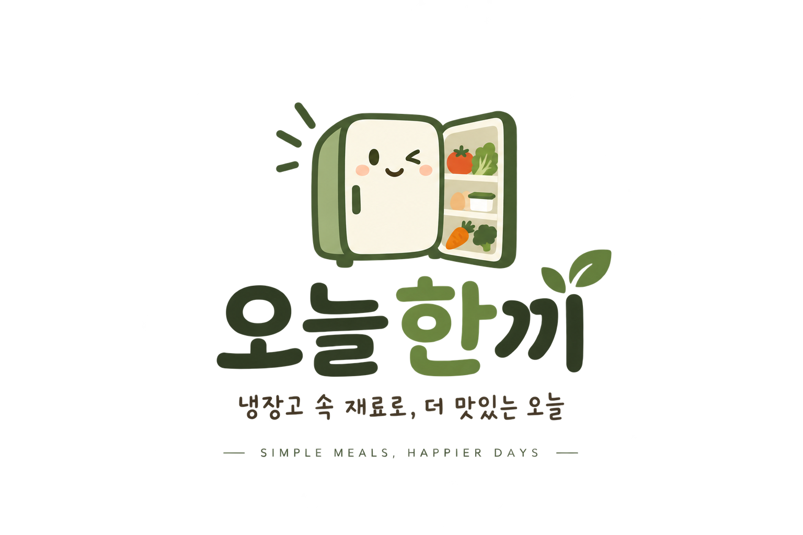

🤔 오늘 뭐 먹지?
냉장고 속 재료로 어떤 음식을 먹을지 결정하기 어렵습니다

냉장고에 재료는 있는데 무엇을 만들어야 할지 고민될 때가 있습니다.
냉장고 속 재료로 어떤 음식을 먹을지 결정하기 어렵습니다
냉장고에 남은 식재료를 어떻게 활용해야 할지 몰라 버리게 되는 경우가 있습니다.
매번 외식이나 배달을 이용하면 식비가 부담될 수 있습니다.
가지고 있는 재료를 선택하고 지금 만들 수 있는 레시피를 찾아보세요.
현재 가지고 있는 식재료를 선택해주세요.
선택한 재료를 활용할 수 있는 간단한 레시피를 추천해드립니다.
레시피를 따라 쉽고 간편하게 오늘의 한 끼를 완성해보세요.
간단한 3단계로 오늘의 메뉴를 찾아보세요.
냉장고에 있는 재료를 골라요.
선택한 재료로 만들 수 있는 메뉴를 확인해요.
원하는 레시피를 보고 한 끼를 완성해요.
현재 가지고 있는 식재료를 선택하면 활용할 수 있는 메뉴를 확인할 수 있어요.
오늘한끼 이용 중 궁금한 점이 있으신가요?
많이 묻는 질문을 먼저 확인해보세요.
오늘한끼를 이용하면서 궁금한 내용을
아래 자주 묻는 질문에서 확인해보세요.